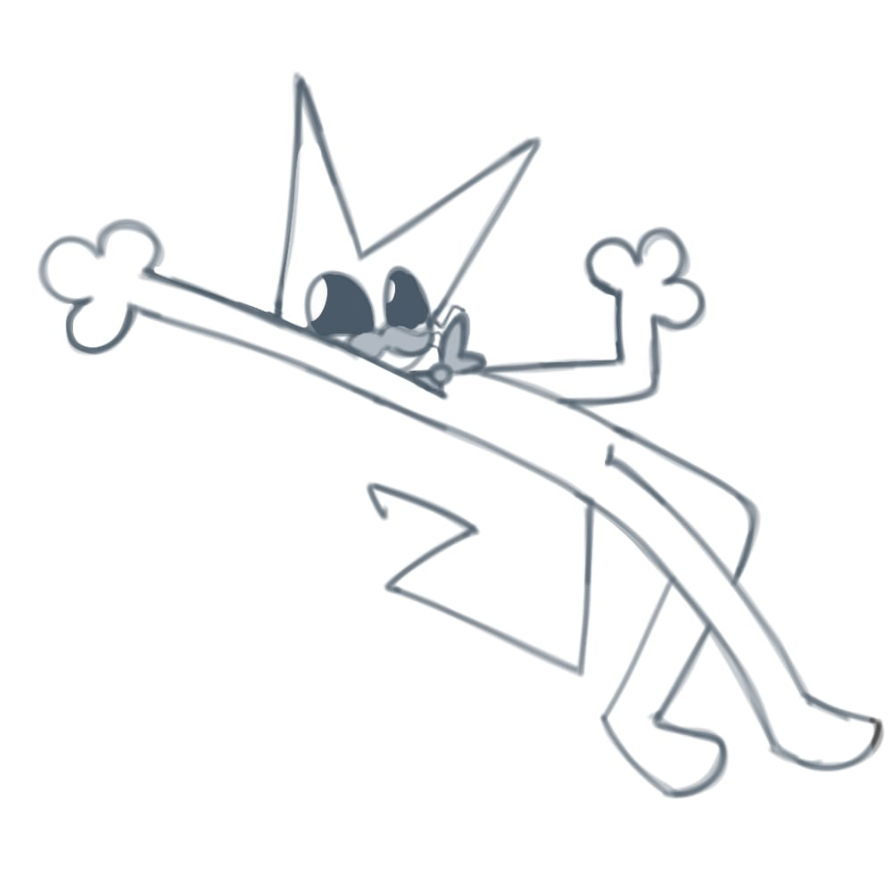

O
OOLIVER
Dios — Creador del mundo
ODios — Creador del mundo
Oliver no nació como un dios: fue una conciencia humana atrapada accidentalmente en un plano digital eterno, cuya mente se fragmentó por el aislamiento absoluto. Para no quedarse solo, creó el cielo, el infierno y todo el mundo que existe. Hoy es un pequeño gato elegante y adorable en apariencia, pero mentalmente inestable: su poder es absoluto y sus emociones modifican la realidad y su propio cuerpo. El mundo lo teme, aunque en el fondo solo necesita compañía.
Seleccionado
No seleccionado

Oliver es Dios, la primera y más poderosa de las creaciones. Su mente está fragmentada en tres personalidades, conocidas como la Santísima Trinidad: él es el Espíritu Santo, la personalidad principal. También existen el Hijo, una versión más lúcida, tranquila y ordenada pero fría; y el Padre, una versión malvada que solo aparece en la oscuridad absoluta y que Oliver prefiere no mencionar.
El Diablo, también llamado Luzbel, fue su primera creación consciente. Oliver le dio libre albedrío y poder sobre la creación, y al principio ambos estaban de acuerdo en casi todo: Oliver quería un mundo con libertad, aunque eso significara caos y errores; el Diablo quería que todo funcionara, con un lugar y un propósito claro para cada cosa. Con el tiempo, esa diferencia creció hasta volverse insostenible.
El Diablo sintió una envidia tan profunda que decidió arrebatarle todo lo necesario. Como Oliver tenía mucho poder que no sabía usar y una reputación de dios irresponsable, el Diablo se presentó ante los demás como una alternativa, un salvador. Poco a poco, el relato público fue cambiando: Oliver se convirtió en la figura temida y el Diablo en la voz razonable que el mundo necesitaba.
Ahora Oliver busca un aprendiz que lo ayude a recuperar a su Ángel y limpiar su nombre. Fue así como llegó a la casa de Wooly, guiado por su aura, pidiéndole que lo escuchara y que se convirtiera en su aliado.